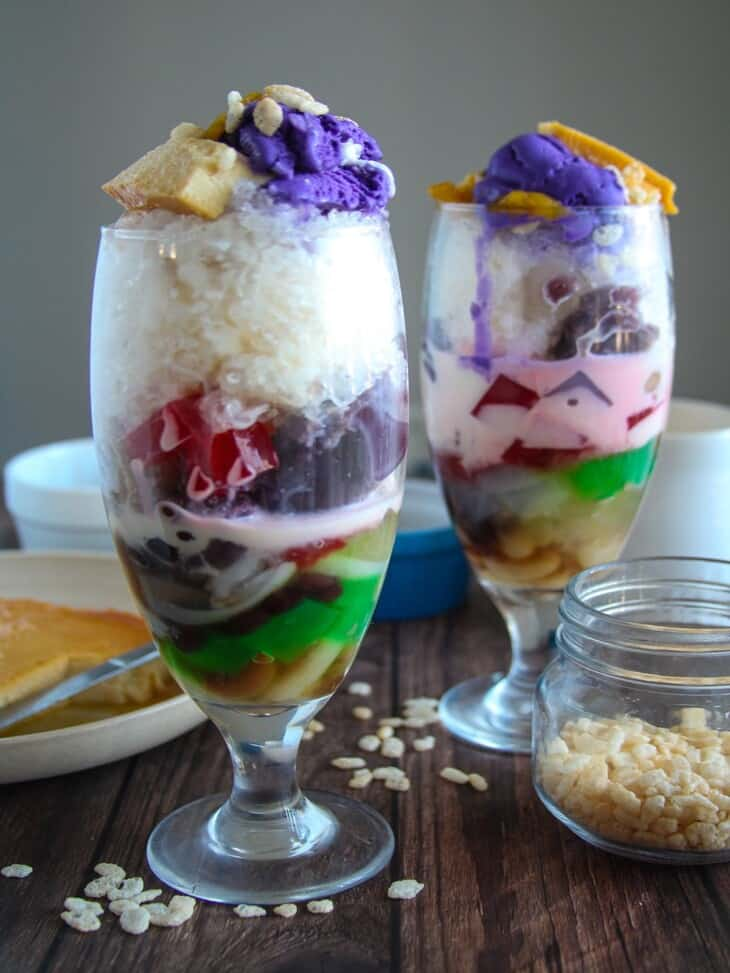

Halo-Halo

Description
Halo-halo is an iconic Filipino shaved ice dessert that's assembled in a tall
glass and mixed by the diner with a long-handled spoon upon arrival—the name means "mix-mix."
Each creamy and refreshing bite is packed with flavors and textures due to a myriad of
add-ins, like crunchy toasted pinipig (pounded young rice), soft sweetened
Saba bananas (a native banana cultivar), and chewy nata de coco (coconut jelly).
Ingredients
- 1/2 cup gulaman cubes or sago
- 1/2 cup sweetened beans (garbanzo, red mung, and/or white beans)
- 1/2 cup Nata de coco (drained well)
- 1/2 cup Kaong (drained well)
- 1/2 cup sweetened saba bananas
- 1/2 cup sweetened jackfruit strips
- 1/4 cup sweetened macapuno
- 1/2 cup ube halaya
- shaved ice
- 1 cup evaporated milk
- 1 cup leche flan
- 4 scoops ice cream (mango, ube, or vanilla)
Steps
- Prepare the gulaman according to package directions.
Use less water than called for to yield a firmer texture
- Prepare the ingredients from scratch or use bottled
halo-halo ingredients.
- In a tall glass, add about a teaspoon of each desired
add-ins to about 1/3 full.
- Pack the glass with shaved ice.
- Drizzle evaporated milk over the ice.
- Top the ice with leche flan and scoop of ice cream.
- Garnish with strips of macapuno and sprinkle with pinipig, if desired.
- Serve immediately.